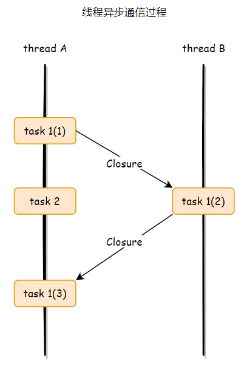
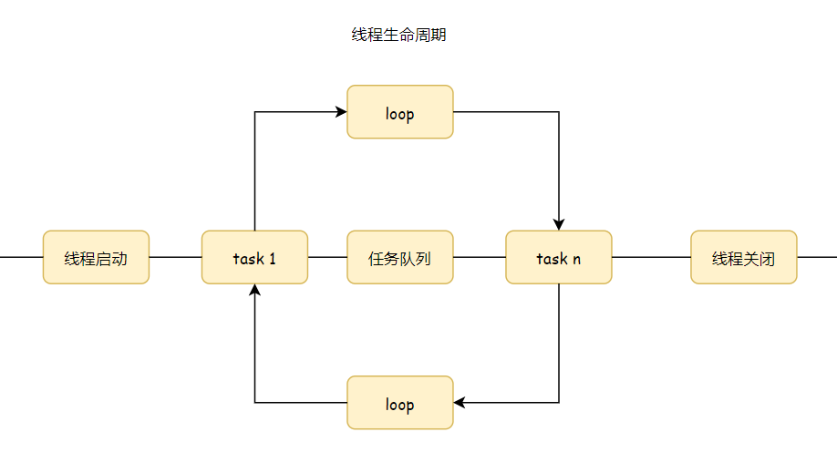
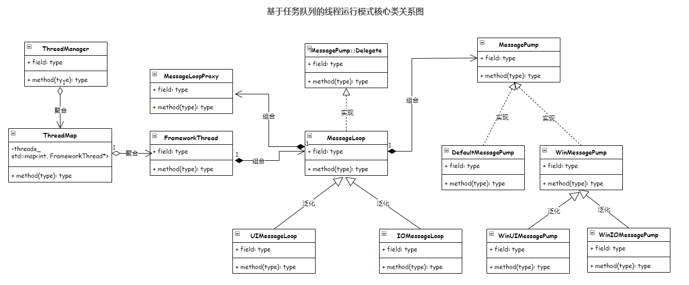

写在前面：相信很多人编程的痛点肯定包括多线程。执行顺序的不确定性，资源的并发访问一直都困扰着大家。相较于传统的锁编程，chromium 并不鼓励使用加锁机制。
线程模型概述
设计原则：
- 不在 UI 线程执行耗时操作，保证界面的流畅不卡顿。（解决方法：程序启动时起一个杂事线程-ThreadGlobalMisc，专门处理这些耗时操作）
- 少用锁和线程安全对象，设计上避免并发访问资源，对象只会存在一个线程，通过在线程之间传递消息实现线程间通信。（每个线程有一个任务队列，只有在队列中插入任务和取出任务时用到了锁）
- 线程之间不要互相阻塞。（每个线程都有自己的 eventloop 和 eventpump，处理本线程的任务）
在程序启动时就创建预定用途的线程，后续就尽量使用已有线程，不要创建新的线程。
栗子：一个异步通信过程
一个线程请求另一个线程执行任务时，只需将任务封装成一个 闭包-Closure 投递到对方线程的任务队列即可。
然后我解释一下上图的意思：
A 线程从任务队列取出一个任务执行，这个任务就是
task 1(1)。这个任务中需要 B 线程参与，于是将一个闭包投递给 B 线程执行，这个闭包对应的就是
task 1(2)。在 B 线程执行的过程中，与此同时 A 线程就接着从自己的任务队列，取出下一个任务
task 2继续执行。到这步就是一个典型的异步通信过程了，如果 A 线程不需要知道
task 1(2)的执行结果，就结束了。A 线程如果需要知道异步通信的结果，B 线程在
task 1(2)执行完后，再发一个闭包到 A 线程的任务队列即可。
为了完成上述异步通信，线程的生命周期如下图：
线程在启动后，就围绕着一个任务队列不断地进行循环，直到线程关闭。在循环期间，不断地检查队列是否为空，不为空就取出 任务-Task 执行，如果为空，可以通过条件变量锁将线程沉睡，当有新的任务插入队列时，再将线程唤醒。
所以，一个线程如果请求另外一个线程执行某一操作，只需将操作封装成任务投递到目标线程的任务队列即可。
这种基于任务队列的线程运行模式，要求在对问题进行建模时，提前知道执行者。在设计数据结构时，就已经规定了这些数据仅仅会被执行者访问，所以就不需要加锁操作了。这就是 chromium 通过任务队列实现异步通信的多线程模型的设计哲学（爱了）。
啥是闭包？
闭包的定义是：一个函数和它所引用的非本地变量（非 lambda 表达式内部定义的变量）的一个集合。
通俗的说，就是利用了 lambda 表达式可访问上下文环境从而实现的一个可调用对象。
举个栗子：
1 | // 伪代码 |
我们分析一下这个栗子里的伪代码：
通过 lambda 表达式的 this 捕获，可以在表达式中使用这个对象的成员函数和成员变量。
把这个闭包投递到 misc 杂事线程中。
需要注意一点就是，必须保证在执行这个任务时，对象还没有被销毁。所以在这里使用了 weakcallback 弱回调。原理就是利用
weak_ptr管理对象生命周期，利用它的expired()函数判断对象是否过期，如果没过期才能进行调用。
线程模型实现
代码分析的是网易 nbase 线程库，这个库是参考 chromium 线程模型实现的。
注：由于小明并不是这个库的作者，而是在学习源码时做出的总结，如果有讲错的地方请多担待。
小明简单的画了一个图，咱们先大概的讲下每个类的作用。
ThreadManager：这个一个全局的单例类，管理所有的线程。FrameworkThread：线程类，我们创建的线程类需要从这个类派生出来。MessageLoop：消息循环，每个线程有且只有一个消息循环。负责维护任务队列，响应 MessgaePump 回调时处理任务队列。MessageLoopProxy：消息循环代理，提供跨线程安全访问 MessageLoop 的机制，非本线程内的 PostTask 族函数必须通过 MessageLoopProxy 调用。MessagePump：消息泵，负责起消息循环，调度 MessageLoop。MessagePump::Delegate：这个类定义了一组接口，由 MessageLoop 实现，MessagePump 通过这组接口来触发 MessageLoop 执行特定的任务。
线程：从创建到运行、添加任务
下面以一个普通的线程为例，来看看线程从创建到执行的过程。
创建一个 FrameworkThread 对象，调用成员函数 Start 启动一个线程，成员函数 Run 作为线程的入口。
1
2
3
4
5
6
7
8
9// 在 windows 平台下创建一个线程
bool Thread::Create()
{
...
// create thread first
thread_handle_ = (HANDLE)_beginthreadex(NULL,
0, ThreadProcFunc, this, 0, (unsigned*)&thread_id_);
...
}FrameworkThread 类的成员函数 Run 负责创建消息循环，也就是给这个线程创建一个 MessageLoop 。
1
2
3
4
5
6
7
8
9
10
11
12
13
14
15
16
17
18void FrameworkThread::Run()
{
...
MessageLoop *message_loop;
if (loop_type_ == MessageLoop::kCustomMessageLoop)
message_loop = factory_->CreateMessageLoop();
else {
if (loop_type_ == MessageLoop::kIOMessageLoop)
message_loop = new IOMessageLoop;
else if (loop_type_ == MessageLoop::kUIMessageLoop)
message_loop = new UIMessageLoop;
}
message_loop_ = message_loop;
...
Init();
message_loop_->RunWithDispatcher(dispatcher_);
...
}MessageLoop 类在创建消息循环的过程中，会创建一个消息泵 MessagePump 对象。
1
2
3
4
5
6
7
8
9
10
11
12
13
14
15
16
17
18
19MessageLoop::MessageLoop()
: type_(kDefaultMessageLoop),
state_(NULL),
#if defined(OS_WIN)
os_modal_loop_(false),
#endif // OS_WIN
nestable_tasks_allowed_(true),
next_delayed_task_sequence_num_(0)
{
// 一个线程内不能存在两个或以上MessageLoop
assert(g_lazy_ptr.Pointer()->Get() == NULL);
// 默认消息循环
if (type_ == kDefaultMessageLoop)
pump_.reset(new DefaultMessagePump);
g_lazy_ptr.Pointer()->Set(this);
message_loop_proxy_.reset(new MessageLoopProxy, &MessageLoopProxyTraits::Destruct);
message_loop_proxy_->target_message_loop_ = this;
}消息循环创建完成后，调用 MessageLoop 类的成员函数 Run 或者 RunWithDispatcher，从而调用 MessagePump 的 Run 函数启动消息循环。
1
2
3
4
5
6
7
8
9
10
11
12
13
14
15void MessageLoop::RunInternal()
{
assert(this == current());
#if defined(OS_WIN)
if (state_->dispatcher && type() == kUIMessageLoop)
{
static_cast<WinUIMessagePump *>(pump_.get())->
RunWithDispatcher(this, state_->dispatcher);
return;
}
#endif
pump_->Run(this);
}到此，一个带消息循环的线程就创建成功了，然后我们要做的就是往线程的任务队列中投递任务。方法是通过 MessageLoop 对象的 PostTask族函数：
- PostTask：添加需要马上处理的并且可以在嵌套消息循环中处理的任务。
- PostDelayedTask：添加需要延迟处理的并且可以在嵌套消息循环中处理的任务。
- PostNonNestableTask：添加需要马上处理的并且不可以在嵌套消息循环中处理的任务。
- PostNonNestableDelayedTask：添加需要延迟处理的并且不可以在嵌套消息循环中处理的任务。
解释一下“嵌套任务”的意思：
1
2
3
4
5
6
7
8// 如果启用嵌套任务，那么Task将被立即执行，否则将先被暂存在一个队列中直到上层任务执行完成再执行
// 典型的场景：
// - 线程启动了一个MessageLoop
// - 线程收到了一个Task，Task #1
// - Task #1执行过程中弹出了一个MessageBox从而隐式地进入另一个MessageLoop，即MessageBox消息循环。
// - 在MessageBox的MessageLoop尚未结束前，线程又收到了另一个Task，Task #2
// - 如果此时嵌套任务处理被启用，那么Task #2将立即被执行（不管Task #1是否已经结束），
// 否则，Task #2将在Task #1被执行完成后再在线程的MessageLoop中执行向线程的消息队列发送消息之后，需要唤醒线程，这是通过调用 MessagePump 类的成员函数 ScheduleWork 进行的。线程被唤醒后，就会调用 MessageLoop 类重写父类 MessagePump::Delegate 的两个成员函数 DoWork 和 DoDelayedWork 对任务队列的任务进行处理。如果没有任务处理，线程就进入闲置状态，此时调用 DoIdleWork 函数处理被缓存着的非嵌套任务。
消息循环
Chromium 定义了 3 种消息循环以应对不同的场景。根据 MessageLoop 的类型，会实例化不同的 MessagePump，在 windows 环境下，有三种，分别是：
- DefaultMessagePump
- WinUIMessagePump
- WinIOMessagePump
其中，DefaultMessagePump 只处理 Task。
WinUIMessagePump 能处理 Task 和 windows 消息。
WinIOMessagePump 能处理 Task 和 IO 事件。
不同的 Pump 使用不同的方式唤醒，DefaultPump 是等待Event信号量，UIPump 是阻塞在 GetMessage 上等待 Windows 消息，所以可以发送 Windows 消息唤醒。而 IOPump 是阻塞在 IO 完成端口上，那么只要模拟发送一个 IO 完成信息过去即可唤醒线程。
MessagePump 的 Run 函数是执行消息循环的过程，我们来分析下，是如何实现这些 Pump 的。
1 | void DefaultMessagePump::Run(Delegate* delegate) |
Run 函数传进来的 delegate 就是 MessageLoop，它实现了 MessagePump::Delegate 接口。通过对比上面三个函数发现，不同的地方只是等待任务，唤醒线程方式不同，其它的部分就是调用 Delegate 实现的这三个函数。
MessagePumpDefault
这个 Pump 是最简单的，通过 Event 信号量唤醒，处理 Task 队列，处理延迟 Task 队列，再处理 IdleWork，如果没有 IdleTask 则线程进入睡眠状态，当有新任务到来时，唤醒线程。
WinUIMessagePump
Windows 程序是消息驱动的，每个 GUI 线程，系统会维护一个线程消息队列。当线程调用 GDI 函数时，系统会帮我们创建这个消息队列。
Windows 程序不管怎么封装，它的主线程肯定需要有如下这样的一个消息循环。
GetMessage 获得一条消息，然后调用 DispatchMessage 分发消息。DispatchMessage 首先找到消息对应的窗口，调用窗口的消息处理函数。
1 | // 消息循环 |
所以这个 Pump 的实现相对复杂一点，需要在 loop 中处理 Task 队列和 windows 消息队列。所以我们就需要把这个 windows 消息循环给实现在这个 DoRunLoop 函数中。
看下伪代码：
1 | for(;;) |
处理 windows 消息
循环先从 windows 的消息队列中提取下一条消息进行处理
1 | bool more_work_is_plausible = ProcessNextWindowsMessage(); |
1 | bool WinUIMessagePump::ProcessNextWindowsMessage() |
在 ProcessNextWindowsMessage 函数中主要处理 windows 的窗口消息，它的返回值表示输入队列中是否还有其他消息待处理，这样可以避免多调用一次 ::MsgWaitForMultipleObjectsEx。
ProcessMessageHelper 代码如下：
1 | bool WinUIMessagePump::ProcessMessageHelper(const MSG& msg) |
使用基于 MessageLoop 的消息分发机制，可以减少无谓的线程创建，同时方便跨线程通信，值得借鉴。
由于小明水平有限，表达也不够好，本文内容有限，很多重要的地方可能都没有讲到。